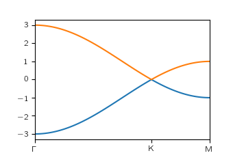

Python Tight Binding (PythTB)¶
PythTB is a software package providing a Python implementation of the tight-binding approximation. It can be used to construct and solve tight-binding models of the electronic structure of systems of arbitrary dimensionality (crystals, slabs, ribbons, clusters, etc.), and is rich with features for computing Berry phases and related properties.
Quick installation¶
Type in terminal:
pip install pythtb --upgrade
or if you need more assistance follow these instructions.
Quick example¶
This is a simple example showing how to define graphene tight-binding model with first neighbour hopping only. Below is the source code and plot of the resulting band structure. Here you can find more examples.
from pythtb import *
# lattice vectors and orbital positions
lat=[[1.0, 0.0], [0.5, np.sqrt(3.0)/2.0]]
orb=[[1./3., 1./3.], [2./3., 2./3.]]
# two-dimensional tight-binding model
gra=tb_model(2, 2, lat, orb)
# define hopping between orbitals
gra.set_hop(-1.0, 0, 1, [ 0, 0])
gra.set_hop(-1.0, 1, 0, [ 1, 0])
gra.set_hop(-1.0, 1, 0, [ 0, 1])
# solve model on a path in k-space
k=[[0.0, 0.0],[1./3., 2./3.],[0.5,0.5]]
(k_vec,k_dist,k_node)=gra.k_path(k, 100)
evals=gra.solve_all(k_vec)
# plot bandstructure
import matplotlib.pyplot as plt
fig, ax = plt.subplots()
ax.plot(k_dist,evals[0,:])
ax.plot(k_dist,evals[1,:])
ax.set_xticks(k_node)
ax.set_xticklabels(["$\Gamma$","K","M"])
ax.set_xlim(k_node[0],k_node[-1])
fig.savefig("band.png")
|
 |